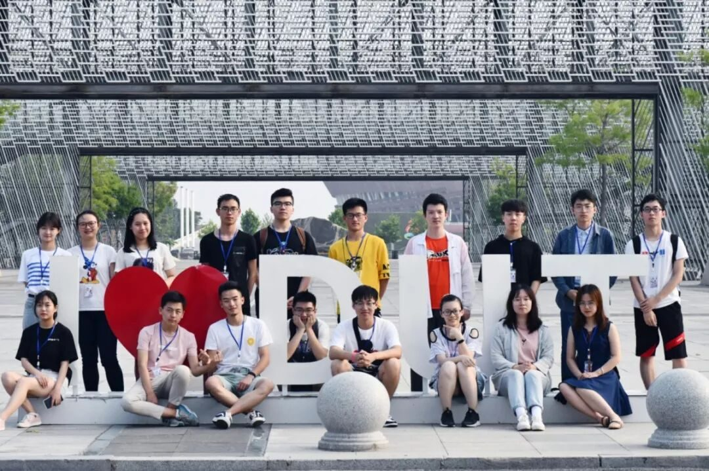
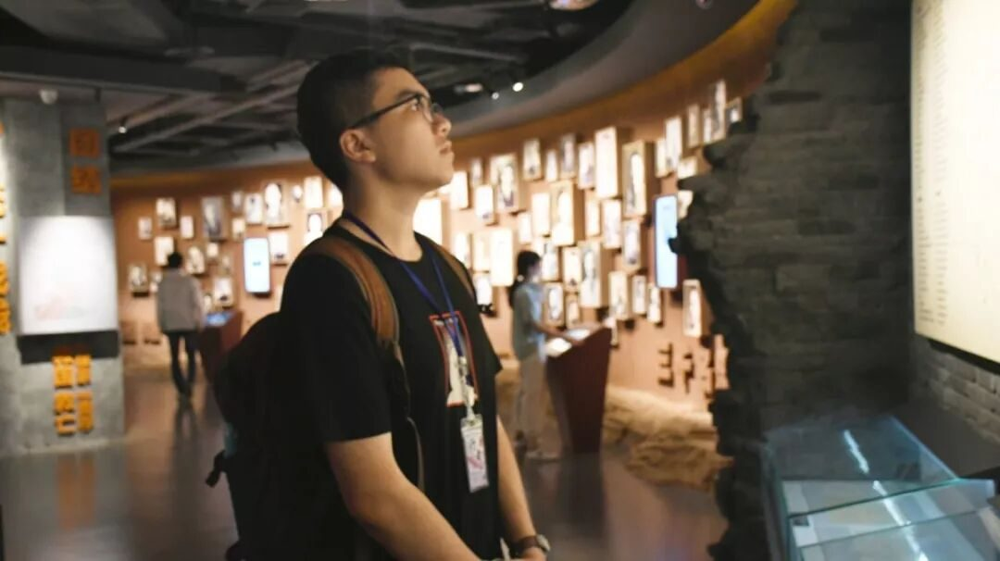
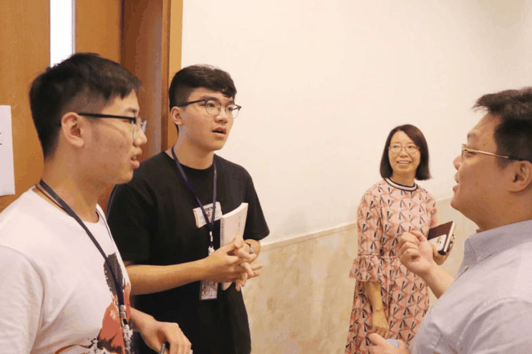
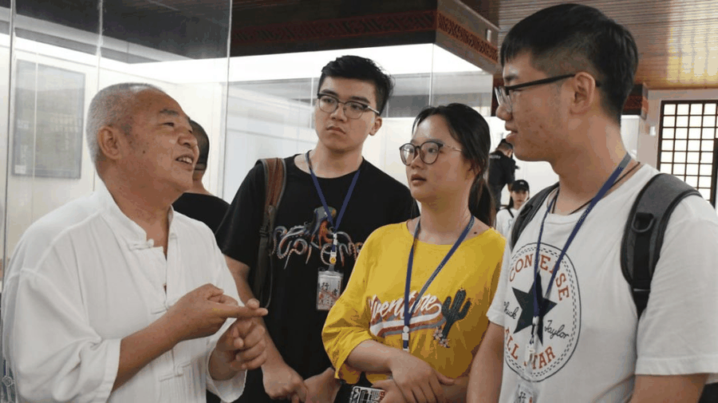
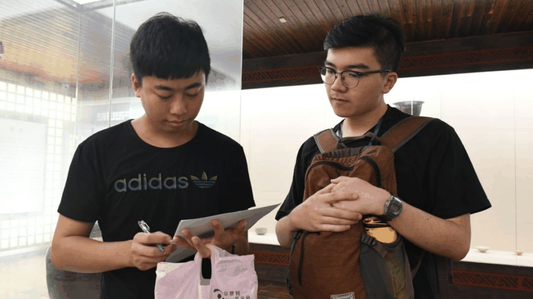
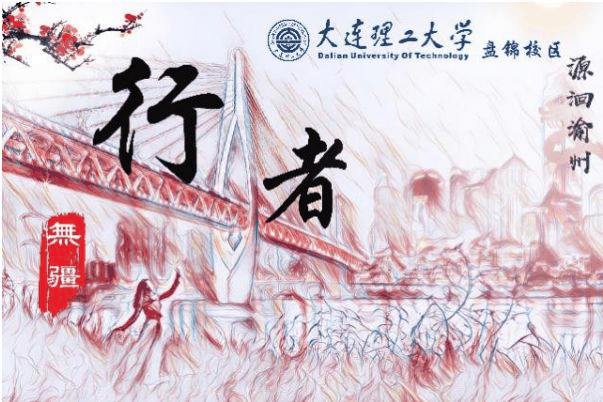

【渝传尺素·二】行千里方可致远大


行者
唐晟杰

我的家乡重庆，到底是怎样一个城市？🤔🤔🤔
作为在重庆土生土长的年轻人，20年来这个问题始终没有得到一个很好的回答。而一次深入人心的源洄渝州实践却给了我答案。从学校到渝州，2000多公里，20小时的旅途，只为寻求重庆这所城市所包含的精神；19人，采访、财务、摄影、文字、采访、调研、宣传、后勤8个组，各司其职，只为给团体一个高效的运转，完美地完成本次调研。这个团队从最开始的互相不熟悉，到相互磨合，互帮互助，再到最后的一家人，经历的不仅仅是调研的过程，体会到的不仅仅是文化带来的感悟，还有真实的友情。
在加入该实践团体之前，就早有耳闻“行者无疆”实践团的大名。因为在本次实践之前，我没有做过一次比较正式的实践，所以在申请加入本次源洄渝州的活动的时候，我心里是十分忐忑的。
一方面是我十分希望能被选中加入这个团队，体会一次真真正正的实践活动，但另外一方面有许许多多比我优秀的竞争者，而我的经历，能力等许多方面都不如他们，因此很担心自己不会被选上。但在得知自己进入了这个实践团，并且我进入了最想去的后勤组的时候，我除了放松下来，没有之前紧张，剩下的就只剩感激和愉悦了。💪💪💪
由于后勤主要是安排路线，并根据实际情况合理改变行程计划，有突发的情况能及时处理。而我是本地人，对重庆的交通十分熟悉，而且自己也是个比较细心缜密的人，我知道自己在这方面优势稍微大一些。进了团队，就要做事呀。当时正值期末考试周，当身边的人都在如火如荼地为学科备考的时候，我还得抽出一些时间来安排行程，而且要做到尽量细致入微。
平心而论，我当时其实是有点不情愿牺牲自己的学习时间来为行程做计划。😫心有余而力不足是期末那段时间的常态。可是后来我的态度有所转变，我明白其实包括队长在内的许许多多组内成员都在一边复习一边为实践的前期准备默默付出着，而我的路线设计部分当仁不让的成为尤其重要的一环。在队长的帮助下，前期准备工作被我们一点点改进一点点完善。


邓小平爷爷曾经说过实践是检验真理的唯一标准。可能我们这个实践的活动与那个时代所提出的实践二字有含义上的些许区别，但其实在我的理解中，实践就是对一个地区或者一件事物一个深入，多方面的了解，有真知灼见，受益匪浅的一个过程。因为在践行过后，才会对它们有个最真实的体会。
为什么说这次实践给了我答案？
🤔🤔🤔
其实原因非常简单。
我从小生活在重庆，却往往忽视了包含重庆文化精髓的许多事物，多年以来，环境，家长，学校给我灌输的观念在与学习积累知识。学习是我的第一要务，而重庆历史以及文化却鲜为人知，因为这些方面的内容或者说知识不会出现在课本上，即使是有，也是很少一部分。应试教育所带来的问题，其实早已蔓延到了许多的学生身上。我在重庆呆了18年，我不敢说我对重庆了解。相比之下，倒是更多的外地人能对重庆的历史有过深入的学习，这方面我真的是自惭形秽。


实践的6天当中，我们巴渝文化与英雄文化入手，深刻地从多角度，多维度地探究了重庆这座城市的前世今生。我学到的不仅仅是重庆的历史文化，更多还是一种前所未有的为自己城市所感到的自豪。实践，其实也是踏入社会，了解社会的一个过程。在实践过程中，让我体会最深的一个环节就是发问卷。实践的前期，我们组织在校园里发问卷，时常遇到熟识的人，这让我分发问卷的速度很快，也不会觉得胆怯。✌

而在实践过程中，在得知需要给完全陌生的路人发问的时候我其实是有点抵触的。一是我从小到大很少有与陌生人主动交流的经历，再加上自己的性格方面的原因，在发问卷的时候很难说得出口。而被拒绝的情况经常发生，有时候会体会到强烈的挫败感。可是后来自己发出问卷，得到了大众更多对不管是巴渝也好还是英雄文化也好的想法，见解的时候，其实是觉得有一种成就感的。
发问卷的过程其实也是个充实自己，了解社会的一个过程。永远不要把发问卷当做一种任务去完成，而要当做一项待完善的探索。其实我们问卷的目的，最终还是收集老百姓们的各种想法，各种洞见，从而丰富我们自身对重庆文化的理解和追求。
有一首歌里唱到
“我敢，在人们嘲笑之中默默地干；
说干就干，在倒下之前只求活个痛快。”
默默地努力着，做些有意义的事情毫不后悔，
是我加入行者无疆的初衷。

在这里遇到了一群志同道合的小伙伴，是我一生难能可贵的财富。每一个成员都是单独的个体，都有自己的性格特点；每个人组成了这个团体，都牢记自己的使命，完美的给此次事件画上了句号。实践是充实自我，能更清楚看清这个世界的最好的行动。
我很庆幸自己能参与其中，与优秀的队友一起完成了本期行者无疆的实践。没有谁的生活会一直完美，但无论什么时候，都要看着前方，满怀希望就会所向披靡，而我们的理想终将实现。
行千里，我们做到了；在实践中认识自我，增长见识，在历史与文化的大海里遨游，见贤思齐，得到了广大的胸怀，对未来有了广大的展望。所谓行千里致广大，我想也不过如此吧。我始吾之程，将不止，此所谓行者矣。
来源丨行者无疆实践团
文字丨唐晟杰
排版丨康艳虎
审核丨邓子孚 段智然
视频丨陈辉
行者无疆实践团
QQ：2758025831

随行者一起认识世界
长按二维码